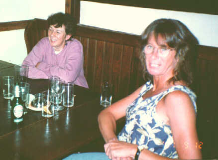
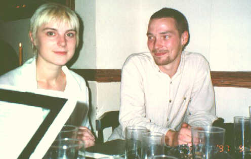
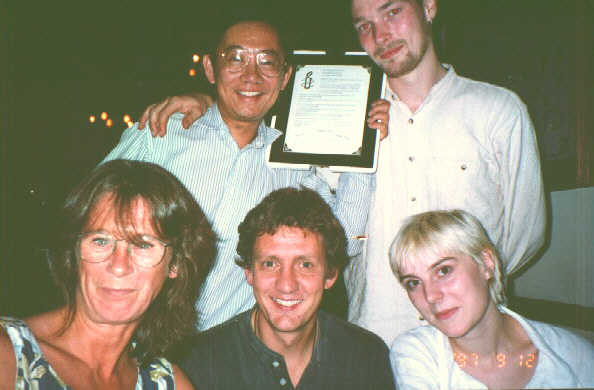

On 12 September,1997, I had the chance to stop in
London for a day to visit the International Secretariat (IS) of
Amnesty International, the headquarter of the world-wide human rights
movement. After an exhausing series of meetings with people interested
in electronic publishing and the use of the web for human rights
activism, we repairedto a nearby pub for some rest and
relaxation.

Hilary Naylor (AIUSA Network Coordinator) and Joanna Rollo (former IS Editor)

Beate Kubitz (IS Campaigner) and Devin Howse (IS Electronic Publishing Coordinator)

Samson Tu, Devin Howse
Joanna Rollo, Graham Lane (Director of Information Technology Program), and Beate Kubitz. They gave me a certificate for the work I've done for Amnesty :-)